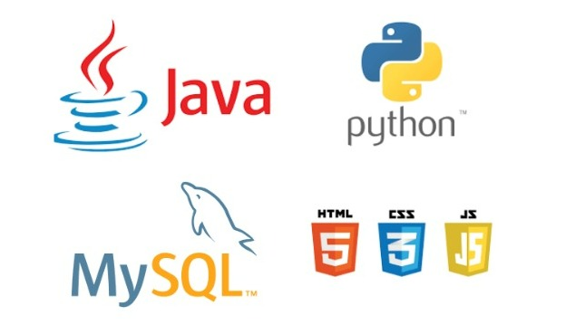
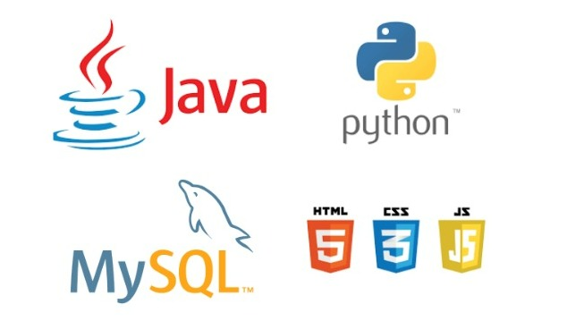

Alessandro Barbosa.
Olá, tenho 45 anos, sou um profissional com formação na área de gestão (sou graduado em processos gerenciais) e tenho muita paixão pela área de TI. Atualmente, estou concluindo uma graduação em ADS (Análise e Desenvolvimento de Sistemas) na Faculdade SENAC PE. Continuo a agregar conhecimentos, realizando estudos na área de ciência de dados, na qual também estou me graduando, além de estar participando de uma jornada imersiva na formação de programadores Front-end pela Softex.
Conheça minha trilha de conhecimentos 
